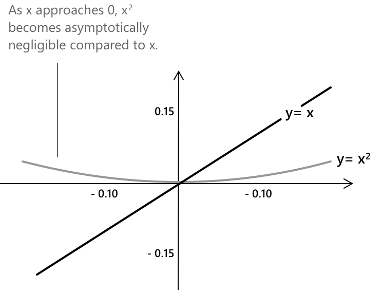

Нотація "мале o"
Що таке позначення «о-мале»
Символ \( o(x) \), що називається «о-мале» від \(x\), належить до родини символів Ландау, які використовуються для характеристики асимптотичних відносин між функціями. Це позначення вказує на те, що одна функція є мізерною порівняно з іншою, коли аргумент наближається до заданої границі. Таким чином, \( o(x) \) формалізує асимптотичний контроль, означаючи, що швидкість зростання однієї функції є незначною відносно іншої в границі.
Нехай \( f, g : A \to \mathbb{R} \) (або \( \mathbb{C} \)) — дві функції, і нехай \( x_0 \) є граничною точкою \( A \). Ми кажемо, що \( f(x) \) є о-малим від \( g(x) \), коли \( x \to x_0 \), якщо \( g(x) \neq 0 \) в околі \( x_0 \) (за винятком, можливо, самої точки \( x_0 \)) і:
\[ \lim_{x \to x_0} \frac{f(x)}{g(x)} = 0 \]
Еквівалентно, для кожного \( \varepsilon > 0 \) існує \( \delta > 0 \), таке що щоразу, коли \( 0 < |x - x_0| < \delta \), маємо \( |f(x)| \le \varepsilon \cdot |g(x)| \). Це означення означає, що \( f(x) \) зростає асимптотично повільніше за \( g(x) \) біля \( x_0 \).
Це позначення застосовується до granic на нескінченності шляхом заміни \( x \to x_0 \) на \( x \to \infty \). Воно також застосовується до послідовностей, де незалежна змінна \( x \) замінюється на \( n \to \infty \).
Приклад 1
Щоб зробити концепцію зрозумілішою, розглянемо простий приклад, заданий наступною границію:
\[ \lim_{x \to 0} \frac{x^2}{x} = \lim_{x \to 0} x = 0 \]
Ця границя демонструє, що \( x^2 \) зростає асимптотично повільніше за \( x \), коли \( x \) наближається до 0. Отже, ми можемо записати:
\[ x^2 = o(x) \quad \text{при} \quad x \to 0 \]
Дослідимо, чому це так. Якщо ми порівняємо \(x\) та \(x^2\), коли \(x\) наближається до нуля, ми помітимо, що обидві функції прагнуть до нуля, але з різною швидкістю. Графік чітко показує, що біля нуля \(x^2\) набагато менша за \(x\).

Ось кілька прикладів:
- Якщо \(x = 0.1\), то \(x = 0.1\) і \(x^2 = 0.01\).
- Якщо \(x = 0.01\), то \(x = 0.01\) і \(x^2 = 0.0001\).
- Якщо \(x = 0.001\), то \(x = 0.001\) і \(x^2 = 0.000001\).
Як показують ці приклади, \(x^2\) стає набагато меншою за \(x\), коли \(x\) наближається до нуля. Це ключова ідея позначення «о-мале»: воно відображає той факт, що одна функція може стати асимптотично мізерною порівняно з іншою, коли аргумент наближається до певного значення.
Приклад 2
Позначення «о-мале» залишається застосовним, коли аргумент необмежено зростає. Наступна границя ілюструє це при \( x \to \infty \):
\[ \lim_{x \to \infty} \frac{x}{x^2} = \lim_{x \to \infty} \frac{1}{x} = 0 \]
Оскільки відношення прагне до нуля, виконується наступний вираз:
\[ x = o(x^2) \quad \text{при} \quad x \to \infty \]
Цей результат вказує на те, що \( x \) зростає асимптотично повільніше за \( x^2 \), коли \( x \) необмежено зростає. Загалом, для будь-яких двох поліномів \( x^a \) та \( x^b \) при \( a < b \), виконується наступний зв'язок:
\[ x^a = o(x^b) \quad \text{при} \quad x \to \infty \]
Інший приклад порівнює логарифмічну функцію з степеневою функцією. Оскільки:
\[ \lim_{x \to \infty} \frac{\log x}{x} = 0 \]
звідси випливає, що \( \log x = o(x) \) при \( x \to \infty \). Цей результат особливо релевантний в аналізі алгоритмів, оскільки він підтверджує, що логарифмічне зростання строго домінується лінійним зростанням.
Умова «о-малого» на нескінченності паралельна умові в скінченній точці: відношення двох функцій має прагнути до нуля, коли аргумент необмежено зростає, а не коли він наближається до фіксованого значення.
Значення \( o(1) \)
Символ \( o(1) \) представляє клас функцій, що прямують до нуля, коли \( x \) наближається до певної точки \( x_0 \). Іншими словами, функція \( f(x) \) належить до \( o(1) \), якщо вона стає нескінченно малою порівняно зі сталою, зокрема 1, при границі \( x \to x_0 \). Формально ми пишемо \(f(x) = o(1)\) при \(x \to x_0\) тоді і тільки тоді, коли:
\[ \lim_{x \to x_0} \frac{f(x)}{1} = \lim_{x \to x_0} f(x) = 0 \]
Множину всіх функцій, що належать до \( o(1) \), можна описати наступним чином:
\[ o_{x_0}(1) = \lbrace f : B(x_0, \delta) \setminus \{x_0\} \to \mathbb{R} \,\Big|\, \lim_{x \to x_0} f(x) = 0 \rbrace \]
На практиці цей вираз використовується для опису концепції \( o(1) \), зазначаючи, що:
- Розглядані функції мають бути визначені на околі \( x_0 \), за винятком самої точки \( x_0 \).
- Функція має прямувати до нуля, коли \( x \) наближається до \( x_0 \).
- Позначення \( o(1) \) представляє множину всіх функцій, які є нескінченно малими порівняно зі сталою, зокрема з \(1\).
- Символ \( B(x_0, \delta) \) позначає відкритий окіл \( x_0 \) з радіусом \( \delta \), де функція визначена і обчислюється границя.
Приклад 3
Розглянемо границю:
\[ \lim_{x \to 0} \frac{\sin(x)}{x} \]
Використовуючи розклад Тейлора для \( \sin(x) \) біля нуля, маємо:
\[ \sin(x) = x - \frac{x^3}{6} + o(x^3) \quad \text{при} \quad x \to 0 \]
Поділивши обидві частини на \( x \), отримаємо:
\[ \frac{\sin(x)}{x} = 1 – \frac{x^2}{6} + o(x^2) \quad \text{при} \quad x \to 0 \]
Тепер зауважимо, що і доданок \( \frac{x^2}{6} \), і залишок \( o(x^2) \) прямують до нуля при \( x \to 0 \).
Отже, при \(x \to 0\) ми можемо записати:
\[ \frac{\sin(x)}{x} = 1 + o(1) \]
Цей вираз показує, що різниця між \( \frac{\sin(x)}{x} \) та сталою \(1\) прямує до нуля в границі, а поправочні члени є асимптотично меншими за 1.
Властивості
Однією з фундаментальних властивостей позначення «мале-о» є те, що за означенням, якщо \( g(x) = o(f(x)) \) при \( x \to x_0 \), то відношення двох функцій прямує до нуля. Формально:
\[ \lim_{x \to x_0} \frac{o(f(x))}{f(x)} = 0 \]
Множення функції на ненульову сталу не змінює її асимптотичної поведінки в позначенні «мале-о». Для будь-якої сталої \( c \in \mathbb{R} \) та функції \( g(x) \), при \(x \to x_0\), маємо:
\[ o(c \cdot g(x)) = o(g(x)) \]
\[ c \cdot o(g(x)) = o(g(x)) \]
Це показує, що позначення «мале-о» стосується відносного зростання: масштабування за допомогою сталого коефіцієнта не впливає на асимптотичну поведінку поблизу \( x_0 \).
Члени «мале-о» також поводяться передбачувано при додаванні. Сума двох членів «мале-о» однієї і тієї ж функції залишається членом «мале-о» цієї функції. Формально при \(x \to x_0\):
\[ o(f(x)) + o(f(x)) = o(f(x)) \]
Це означає, що додавання двох функцій, кожна з яких асимптотично менша за \( f(x) \), не змінює того факту, що сума все ще асимптотично менша за \( f(x) \).
При множенні члена «мале-о» на функцію результатом є новий член «мале-о», де асимптотична поведінка масштабується відповідним чином. Зокрема, для функцій \( f(x) \) та \( g(x) \), при \(x \to x_0\):
\[ f(x) \, o(g(x)) = o(f(x)g(x)) \]
Наприклад, якщо \( g(x) = x \) і \( o(g(x)) = o(x) \), то множення на \( f(x) = x^2 \) дає:
\[ x^2 \cdot o(x) = o(x^3) \]
Інша важлива властивість позначення «мале-о» стосується степенів функцій. Якщо функція \( f(x) \) асимптотично менша за \( g(x) \) при \( x \to x_0 \), то піднесення обох функцій до одного й того самого додатного степеня зберігає відношення «мале-о». Формально, для \( a > 0 \), якщо \(f(x) = o(g(x)) \) при \(x \to x_0\), то \([f(x)]^a = o([g(x)]^a)\) при \(x \to x_0\).
Ця властивість демонструє, що асимптотична поведінка залишається стабільною при масштабуванні додатними степенями. Якщо \( f(x) \) стає нехтояною порівняно з \( g(x) \), то \( [f(x)]^a \) також є нехтояною порівняно з \( [g(x)]^a \) при \( x \to x_0 \). Наприклад, якщо \( f(x) = o(x) \) при \( x \to 0 \), то при \(x \to x_0\) маємо:
\[ [f(x)]^2 = o(x^2) \]
Позначення «мале-о» виявляє транзитивність. Зокрема, якщо \( f(x) = o(g(x)) \) та \( g(x) = o(h(x)) \) при \( x \to x_0 \), то:
\[ f(x) = o(h(x)) \quad \text{при} \quad x \to x_0 \]
Цей результат випливає безпосередньо з означення. Оскільки обидва відношення прямують до нуля, їхній добуток також прямує до нуля, і, отже, \( f(x)/h(x) \to 0 \). Наприклад, оскільки \( x^3 = o(x^2) \) та \( x^2 = o(x) \) при \( x \to 0 \), звідси випливає, що \( x^3 = o(x) \) при \( x \to 0 \).
Ця властивість дозволяє створювати ланцюги асимптотичних порівнянь: якщо \(f\) зростає повільніше за \(g\), а \(g\) зростає повільніше за \(h\), то \(f\) також зростає повільніше за \(h\).
Композиція двох членів «мале-о» зводиться до одного члена. Зокрема, якщо \( h(x) = o(g(x)) \) та \( g(x) = o(f(x)) \) при \( x \to x_0 \), то будь-яка функція, що є «мале-о» від \( g \), також є «мале-о» від \( f \). У компактному записі:
\[ o(o(f(x))) = o(f(x)) \quad \text{при} \quad x \to x_0 \]
Цей результат випливає безпосередньо з властивості транзитивності: якщо \( h = o(g) \) і \( g = o(f) \), то \( h = o(f) \). Наприклад, оскільки \( x^2 = o(x) \) при \( x \to 0 \), будь-яка функція, що є \( o(x^2) \), також є \( o(x) \).
Ця властивість особливо корисна для спрощення вкладених асимптотичних виразів, оскільки вона гарантує, що ітеровані члени «мале-о» можуть бути представлені одним членом.
Відмінність між позначеннями «мале-о» та «велике-О»
Позначення «мале-о» та «велике-О» є представниками родини символів Ландау, але вони описують різні асимптотичні поведінки. Позначення «велике-О» задає верхню межу для функції з точністю до сталого множника, тоді як позначення «мале-о» накладає суворішу вимогу: відношення двох функцій має прямувати до нуля в границі.
Формально, \( f(x) = O(g(x)) \) при \( x \to x_0 \), якщо існують сталі \( M > 0 \) та \( \delta > 0 \), такі що: \(|f(x)| \leq M |g(x)| \) щоразу, коли \(0 < |x – x_0| < \delta\). Ця відмінність ілюструється наступним прикладом.
При \( x \to 0 \), \( x^2 = o(x) \), що також означає \( x^2 = O(x) \). Однак \( x = O(x) \) не означає \( x = o(x) \), як показано нижче:
\[ \lim_{x \to 0} \frac{x}{x} = 1 \neq 0 \]
Границя не дорівнює нулю, тому умова «мале-о» не виконується. Ця асиметрія є основою відмінності: «мале-о» вимагає, щоб відношення прямувало до нуля, тоді як «велике-О» вимагає лише, щоб воно залишалося обмеженим.
Цей зв'язок можна візуалізувати як включення множин: множина функцій, що задовольняють \( f = o(g) \), є строго підмножиною множини функцій, що задовольняють \( f = O(g) \). Кожне відношення «мале-о» є також відношенням «велике-О», але зворотне твердження не є правильним.
Позначення «мале-о» накладає суворішу умову: воно виключає функції, які лише встигають за \( g \), допускаючи тільки ті, що строго відстають у границі.
О-мале позначення в розкладах Тейлора
У розкладах Тейлора о-мале позначення забезпечує суворий підхід для кількісного визначення похибки, що виникає при відсіканні нескінченного ряду на скінченному порядку. Замість переліку кожного наступного члена, залишок представляється одним символом, який визначає його точний асимптотичний порядок.
Нехай задано функцію \( f(x) \), яка є \( n \)-кратно диференційовною в точці \( x_0 \), тоді її розклад Тейлора до порядку \( n \) має вигляд:
\[ f(x) = f(x_0) + f’(x_0)(x – x_0) + \frac{f’''(x_0)}{2!}(x - x_0)^2 + \cdots + \frac{f^{(n)}(x_0)}{n!}(x - x_0)^n + o\bigl((x – x_0)^n\bigr) \]
Залишок \( o((x - x_0)^n) \) передає точну асимптотичну інформацію. Зокрема, похибка зменшується швидше, ніж \( (x - x_0)^n \), коли \( x \to x_0 \), що робить її нехтовною порівняно з останнім явним членом розкладу.
У наступній таблиці наведено розклади Тейлора для функцій, що часто зустрічаються, поблизу \( x = 0 \), кожна з яких представлена з явним о-малим залишком:
| \[ e^x \] | \[ 1 + x + \dfrac{x^2}{2!} + \dfrac{x^3}{3!} + o(x^3) \] |
| \[ \sin x \] | \[ x - \dfrac{x^3}{6} + o(x^3) \] |
| \[ \cos x \] | \[ 1 - \dfrac{x^2}{2} + \dfrac{x^4}{24} + o(x^4) \] |
| \[ \ln(1+x) \] | \[ x – \dfrac{x^2}{2} + \dfrac{x^3}{3} + o(x^3) \] |
| \[ (1+x)^\alpha \] | \[ 1 + \alpha x + \dfrac{\alpha(\alpha-1)}{2}x^2 + o(x^2) \] |
Ці розклади є особливо ефективними для обчислення granic, що містять невизначеності. Заміна початкової функції її розкладом Тейлора перетворює задачу на алгебраїчні маніпуляції, де о-малий залишок зникає в границі. Наступний приклад демонструє цей підхід:
\[ \lim_{x \to 0} \frac{e^x – 1 – x}{x^2} = \lim_{x \to 0} \frac{\dfrac{x^2}{2} + o(x^2)}{x^2} = \frac{1}{2} \]
Коли \( x \to 0 \), о-малий член стає нехтовним, що дозволяє визначити границю за допомогою провідного коефіцієнта.